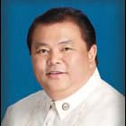

| History |
| Legislators |
| Laws |
| About |
 |
| LEGISLATORS |
| LEGISLATIVE BODY (YEAR) | INCLUSIVE YEARS | LEGISLATIVE DISTRICT/PROVINCE | LEGISLATOR | ||
1 |
1st Philippine Legislature | 1907 - 1909 |
1st District Bohol | BORJA, Candelario |  |
2 |
1st Philippine Legislature | 1907 - 1909 |
2nd District Bohol | CLARIN, Jose A. |  |
3 |
1st Philippine Legislature | 1907 - 1909 |
3rd District Bohol | BOYLES, Eutiquio |  |
4 |
2nd Philippine Legislature | 1910 - 1912 |
1st District Bohol | BORJA, Candelario | |
5 |
2nd Philippine Legislature | 1910 - 1912 |
2nd District Bohol | CLARIN, Jose A. | |
6 |
2nd Philippine Legislature | 1910 - 1912 |
3rd District Bohol | BOYLES, Eutiquio | |
7 |
3rd Philippine Legislature | 1912 - 1916 |
1st District Bohol | BORJA, Candelario | |
8 |
3rd Philippine Legislature | 1912 - 1916 |
2nd District Bohol | CLARIN, Jose A. | |
9 |
3rd Philippine Legislature | 1912 - 1916 |
3rd District Bohol | VIRTUDES, Juan |  |
10 |
4th Philippine Legislature | 1916 - 1919 |
1st District Bohol | GALLARES, Celestino |  |
11 |
4th Philippine Legislature | 1916 - 1919 |
2nd District Bohol | LUMAIN, Macario |  |
12 |
4th Philippine Legislature | 1916 - 1919 |
3rd District Bohol | CASEÑAS ORBETA, Filomeno |  |
13 |
5th Philippine Legislature | 1919 - 1922 |
1st District Bohol | GALLARES, Celestino | |
14 |
5th Philippine Legislature | 1919 - 1922 |
2nd District Bohol | LUMAIN, Macario | |
15 |
5th Philippine Legislature | 1919 - 1922 |
3rd District Bohol | CASEÑAS ORBETA, Filomeno | |
16 |
6th Philippine Legislature | 1922 - 1925 |
1st District Bohol | TORRALBA, Fermin | |
17 |
6th Philippine Legislature | 1922 - 1925 |
2nd District Bohol | SARIGUMBA, Cornelio | |
18 |
6th Philippine Legislature | 1922 - 1925 |
3rd District Bohol | ABUEVA, Teodoro | |
19 |
7th Philippine Legislature | 1925 - 1927 |
1st District Bohol | TORRALBA, Fermin | |
20 |
7th Philippine Legislature | 1925 - 1927 |
2nd District Bohol | CLARIN, Olegario B. |  |
21 |
7th Philippine Legislature | 1925 - 1927 |
3rd District Bohol | GARCIA, Carlos P. |  |
22 |
8th Philippine Legislature | 1928 - 1930 |
1st District Bohol | CONCON, Jose | |
23 |
8th Philippine Legislature | 1928 - 1930 |
2nd District Bohol | RAMIREZ, Marcelo S. | |
24 |
8th Philippine Legislature | 1928 - 1930 |
3rd District Bohol | GARCIA, Carlos P. | |
25 |
9th Philippine Legislature | 1931 - 1934 |
1st District Bohol | CONCON, Jose | |
26 |
9th Philippine Legislature | 1931 - 1934 |
2nd District Bohol | RAMIREZ, Marcelo S. | |
27 |
9th Philippine Legislature | 1931 - 1934 |
3rd District Bohol | CASEÑAS ORBETA, Filomeno | |
28 |
10th Philippine Legislature | 1934 - 1935 |
1st District Bohol | JOSOL, Bernardo |  |
29 |
10th Philippine Legislature | 1934 - 1935 |
2nd District Bohol | FALCON, Macario Q. | |
30 |
10th Philippine Legislature | 1934 - 1935 |
3rd District Bohol | REVILLES, Margarito E. | |
31 |
1st National Assembly (Commonwealth) | 1935 - 1938 |
1st District Bohol | TORRALBA, Juan S. | |
32 |
1st National Assembly (Commonwealth) | 1935 - 1938 |
2nd District Bohol | CLARIN, Olegario B. | |
33 |
1st National Assembly (Commonwealth) | 1935 - 1938 |
3rd District Bohol | REVILLES, Margarito E. | |
34 |
2nd National Assembly (Commonwealth) | 1939 - 1941 |
1st District Bohol | VISARRA, Genaro |  |
35 |
2nd National Assembly (Commonwealth) | 1939 - 1941 |
2nd District Bohol | CLARIN, Olegario B. | |
36 |
2nd National Assembly (Commonwealth) | 1939 - 1941 |
3rd District Bohol | BUSLON, Teofilo B. |  |
37 |
National Assembly (Japanese Regime) | 1943 - 1944 |
Bohol | BUILECER, Vicente P. | |
38 |
National Assembly (Japanese Regime) | 1943 - 1944 |
Bohol | HONTANOSAS, Agapito | |
39 |
1st Congress of the Commonwealth (Liberation Period) | 1945 - 1945 |
1st District Bohol | VISARRA, Genaro | |
40 |
1st Congress of the Commonwealth (Liberation Period) | 1945 - 1945 |
2nd District Bohol | CLARIN, Olegario B. | |
41 |
1st Congress of the Commonwealth (Liberation Period) | 1945 - 1945 |
3rd District Bohol | REVILLES, Margarito E. | |
42 |
2nd Congress of the Commonwealth | 1946 - 1946 |
1st District Bohol | CLARIN, Luis T. |  |
43 |
2nd Congress of the Commonwealth | 1946 - 1946 |
2nd District Bohol | TORIBIO, Simeon G. |  |
44 |
2nd Congress of the Commonwealth | 1946 - 1946 |
3rd District Bohol | GARCIA, Cosme P. | |
45 |
1st Congress of the Republic | 1946 - 1949 |
1st District Bohol | CLARIN, Luis T. | |
46 |
1st Congress of the Republic | 1946 - 1949 |
2nd District Bohol | TORIBIO, Simeon G. | |
47 |
1st Congress of the Republic | 1946 - 1949 |
3rd District Bohol | GARCIA, Cosme P. | |
48 |
1st Congress of the Republic | 1949 - 1949 |
1st District Bohol | VISARRA, Genaro | |
49 |
2nd Congress of the Republic | 1950 - 1953 |
1st District Bohol | CLARIN, Luis T. | |
50 |
2nd Congress of the Republic | 1950 - 1953 |
2nd District Bohol | TORIBIO, Simeon G. | |
51 |
2nd Congress of the Republic | 1950 - 1953 |
3rd District Bohol | BERNIDO, Esteban |  |
52 |
3rd Congress of the Republic | 1954 - 1957 |
1st District Bohol | CASTILLO, Natalio P. | |
53 |
3rd Congress of the Republic | 1954 - 1957 |
2nd District Bohol | CABANGBANG, Bartolome C. |  |
54 |
3rd Congress of the Republic | 1954 - 1957 |
3rd District Bohol | BERNIDO, Esteban | |
55 |
4th Congress of the Republic | 1958 - 1960 |
1st District Bohol | CASTILLO, Natalio P. | |
56 |
4th Congress of the Republic | 1958 - 1961 |
2nd District Bohol | CABANGBANG, Bartolome C. | |
57 |
4th Congress of the Republic | 1958 - 1961 |
3rd District Bohol | GARCIA, Maximino A. |  |
58 |
5th Congress of the Republic | 1962 - 1965 |
1st District Bohol | CASTILLO, Natalio P. | |
59 |
5th Congress of the Republic | 1962 - 1965 |
2nd District Bohol | CABANGBANG, Bartolome C. | |
60 |
5th Congress of the Republic | 1962 - 1965 |
3rd District Bohol | GARCIA, Maximino A. | |
61 |
6th Congress of the Republic | 1966 - 1969 |
1st District Bohol | CASTILLO, Natalio P. | |
62 |
6th Congress of the Republic | 1966 - 1969 |
2nd District Bohol | ZAFRA, Jose S. |  |
63 |
6th Congress of the Republic | 1966 - 1969 |
3rd District Bohol | GALAGAR, Teodoro B. | |
64 |
7th Congress of the Republic | 1970 - 1972 |
1st District Bohol | CASTILLO, Natalio P. | |
65 |
7th Congress of the Republic | 1970 - 1972 |
2nd District Bohol | MALASARTE, Pablo A. | |
66 |
7th Congress of the Republic | 1970 - 1972 |
3rd District Bohol | GALAGAR, Teodoro B. | |
67 |
Regular Batasang Pambansa | 1984 - 1986 |
Bohol, Region VII | TIROL, David B. |  |
68 |
Regular Batasang Pambansa | 1984 - 1986 |
Bohol, Region VII | CHATTO, Eladio T. |  |
69 |
Regular Batasang Pambansa | 1984 - 1986 |
Bohol, Region VII | LAPEZ, Ramon M |  |
70 |
8th Congress of the Republic | 1987 - 1992 |
1st District Bohol | BORJA-AGANA, Venice |  |
71 |
8th Congress of the Republic | 1987 - 1992 |
2nd District Bohol | TIROL, David B. | |
72 |
8th Congress of the Republic | 1987 - 1992 |
3rd District Bohol | ZARRAGA, Isidro C. |  |
73 |
9th Congress of the Republic | 1992 - 1995 |
1st District Bohol | BORJA-AGANA, Venice | |
74 |
9th Congress of the Republic | 1992 - 1995 |
2nd District Bohol | AUMENTADO, Erico B. |  |
75 |
9th Congress of the Republic | 1992 - 1995 |
3rd District Bohol | ZARRAGA, Isidro C. | |
76 |
10th Congress of the Republic | 1995 - 1998 |
1st District Bohol | BORJA-AGANA, Venice | |
77 |
10th Congress of the Republic | 1995 - 1998 |
2nd District Bohol | AUMENTADO, Erico B. | |
78 |
10th Congress of the Republic | 1995 - 1998 |
3rd District Bohol | ZARRAGA, Isidro C. | |
79 |
11th Congress of the Republic | 1998 - 2001 |
1st District Bohol | HERRERA, Ernesto F. |  |
80 |
11th Congress of the Republic | 1998 - 2001 |
2nd District Bohol | AUMENTADO, Erico B. | |
81 |
11th Congress of the Republic | 1998 - 2001 |
3rd District Bohol | JALA, Eladio M. |  |
82 |
12th Congress of the Republic | 2001 - 2004 |
1st District Bohol | CHATTO, Edgardo M. |  |
83 |
12th Congress of the Republic | 2001 - 2004 |
2nd District Bohol | CAJES, Roberto C. |  |
84 |
12th Congress of the Republic | 2001 - 2004 |
3rd District Bohol | JALA, Eladio M. | |
85 |
13th Congress of the Republic | 2004 - 2007 |
1st District Bohol | CHATTO, Edgardo M. | |
86 |
13th Congress of the Republic | 2004 - 2007 |
2nd District Bohol | CAJES, Roberto C. | |
87 |
13th Congress of the Republic | 2004 - 2007 |
3rd District Bohol | JALA, Eladio M. | |
88 |
14th Congress of the Republic | 2007 - 2010 |
1st District Bohol | CHATTO, Edgardo M. | |
89 |
14th Congress of the Republic | 2007 - 2010 |
2nd District Bohol | CAJES, Roberto C. | |
90 |
14th Congress of the Republic | 2007 - 2010 |
3rd District Bohol | JALA, Adam Relson L. |  |
91 |
15th Congress of the Republic | 2010 -2013 |
1st District Bohol | RELAMPAGOS, Rene L. |
 |
92 |
15th Congress of the Republic | 2010 -2013 |
2nd District Bohol | AUMENTADO, Erico B. (+) |
.jpg) |
93 |
15th Congress of the Republic | 2010 -2013 |
3rd District Bohol | YAP, Arthur C. |
 |
94 |
16TH Congress of the Republic | 2013 - 2016 | 1ST District, Bohol Province | RELAMPAGOS, Rene L. |  |
95 |
16TH Congress of the Republic | 2013 - 2016 | 2ND District, Bohol Province | AUMENTADO, Erico Aristotle C. | |
96 |
16TH Congress of the Republic | 2013 - 2016 | 3RD District, Bohol Province | YAP, Arthur C. |

Congressional Library Bureau
Legislative Library Service